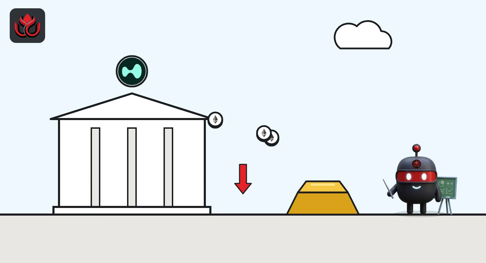

Hyperliquid's crypto bets shrank $640 million since Friday, and ether shorts now pay
CoinGecko's per-market data puts Hyperliquid's open bets at $14.0 billion after Sunday's ether drop. Its $1.93 billion ether market now has negative funding, while bitcoin's does not.
Key points
- Hyperliquid's 339 markets with open bets held $14.01 billion in CoinGecko's data last updated at 11:56 p.m. ET on November 8, down from $14.79 billion on November 6.
- Its crypto markets fell from about $10.24 billion to $9.60 billion. Builder-run stock and commodity markets held $4.41 billion, against $4.55 billion on Friday.
- Funding was negative on Hyperliquid's ether ($1.93 billion open) and Solana ($473 million) markets but positive on bitcoin ($3.10 billion) and HYPE ($1.67 billion).
What moved
Hyperliquid is an onchain exchange for perpetual futures (perps), bets on a price that never expire. We added up open interest (the value of bets still open) across all its markets in CoinGecko's derivatives data, read at 12:40 a.m. ET on November 9. Hyperliquid's figures there were last updated at 11:56 p.m. ET on November 8, after ether's 4.6% Sunday drop.
The total was $14.01 billion across 339 markets. On November 6, a similar count gave $14.79 billion. In CoinGecko's exchange ranking, measured in bitcoin, Hyperliquid fell from 195,681 BTC to 189,822 BTC. It is still second only to Binance, at 416,238 BTC.
Crypto shrank, stocks and gold held
Crypto markets, such as BTC-USD and ETH-USD, held about $9.60 billion, down from about $10.24 billion on Friday. Markets run by outside builders under Hyperliquid's HIP-3 rules, mostly trade[XYZ]'s stock, index and commodity perps, held $4.41 billion, down from $4.55 billion.
Prices split the same way. Over 24 hours on Hyperliquid, ETH-USD fell 4.48%, XRP-USD 5.16% and HYPE-USD 3.63%, while trade[XYZ]'s S&P 500 market rose 0.71%, gold 1.43% and silver 2.02%.
Largest Hyperliquid markets by open bets
US$ million
Hyperliquid data last updated November 8, 2026, 11:56 p.m. ET. Source: CoinGecko derivatives API.

Where shorts are paying
Funding is a small fee that keeps a perp's price near the real asset. When it is negative, shorts (traders betting on a fall) pay longs. On Hyperliquid, 68 markets holding $3.77 billion had negative funding, led by ether, Solana and two oil markets. Bitcoin, HYPE, ZEC and XRP were positive.
Hyperliquid also holds about 36.7% of all open HYPE bets CoinGecko lists ($1.67 billion of $4.56 billion), far more than its roughly 5% share of ether and bitcoin bets.
LC Insight analysis
This section is our reading of the facts above, not a statement of fact.
- We think the ether lean on Hyperliquid matches the wider market, where most ether futures now show negative funding. Hyperliquid traders are following the crowd here.
- The stock and commodity markets barely shrank while crypto did. Traders on Hyperliquid appear to be keeping non-crypto bets open through a crypto sell-off.
- HYPE is the one large coin where Hyperliquid itself sets the tone, so its funding there is worth more attention than on other venues.
What's next
- Whether Hyperliquid's ETH-USD funding turns positive
- Whether its open bets fall below $14 billion
- How much of its open interest builder-run markets hold
Disclaimer. This article is based on public information and the sources listed below as of the update time shown. It is for information only and is not investment, legal or tax advice. Figures may change as companies and authorities publish new data.
Sources
- CoinGecko derivatives tickers API, Hyperliquid markets (read November 9, 2026, 12:40 a.m. ET; Hyperliquid data last updated November 8, 11:56 p.m. ET)
- CoinGecko derivatives exchanges API, open interest in BTC (read November 9, 2026, 12:40 a.m. ET)
- Hyperliquid Docs, HIP-3: Builder-deployed perpetuals
- trade[XYZ] docs, About trade[XYZ]